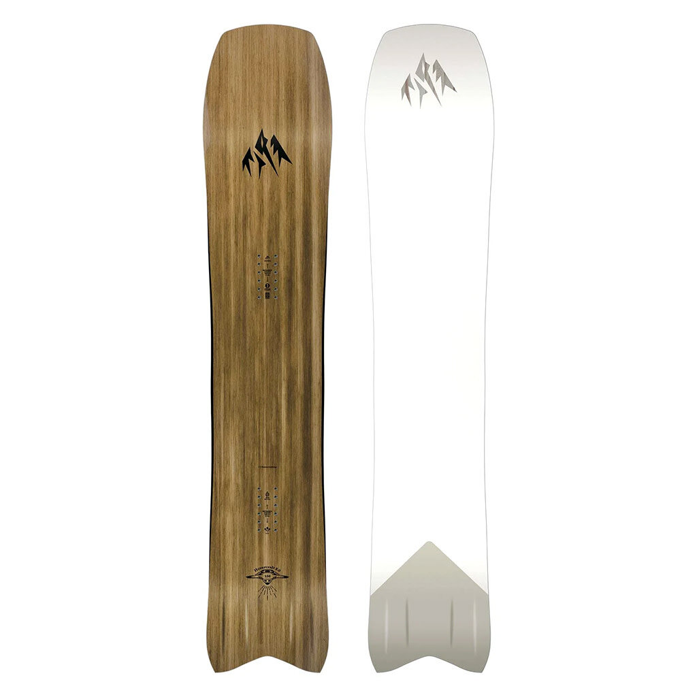
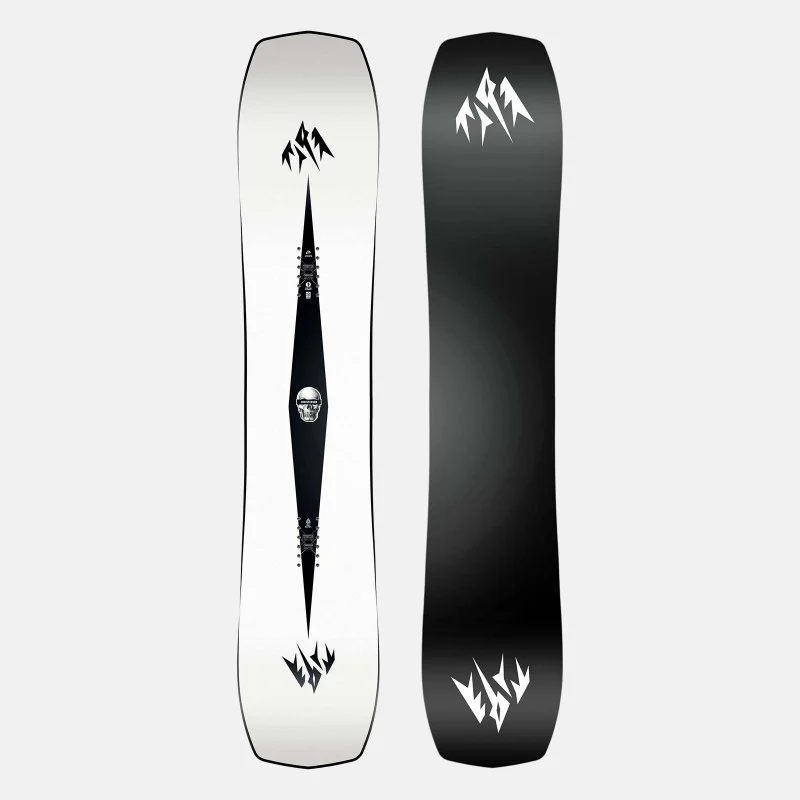

Discover the unparalleled thrill of personalized winter adventures with Snow Shredders' Custom Shaped Snowboards. Immerse yourself in the world of bespoke craftsmanship as we tailor snowboards to match your unique riding style and preferences. Our skilled artisans collaborate with you to create a board that not only complements your individuality but also maximizes your performance on the slopes. Whether you crave the agility of a tapered shape for deep powder or the stability of a directional twin for all-mountain exploration, our custom-shaped snowboards are a testament to precision engineering and innovation. From intricate camber profiles to personalized flex patterns, each board is meticulously crafted to cater to your specific needs, ensuring an unparalleled and exhilarating ride every time you hit the snow. Embrace the freedom to ride like never before with Snow Shredders' Custom Shaped Snowboards – where innovation meets individuality on the mountain.
The shape of a snowboard is a critical factor that significantly influences a rider's experience on the slopes. Snowboards come in various shapes, each carefully designed to enhance specific aspects of performance. Directional shapes, with a distinct nose and tail, are ideal for carving and providing stability at high speeds. Twin shapes, perfectly symmetrical with a centered stance, offer versatility for freestyle riders who enjoy tricks and spins in the terrain park. Asymmetrical shapes cater to the natural biomechanics of the body, optimizing edge control and turn initiation. Innovative tapered shapes are engineered to excel in deep powder, facilitating effortless floatation. The combination of camber, rocker, and sidecut contribute to the overall shape, affecting the board's responsiveness, edge hold, and maneuverability. Whether cruising groomed trails or navigating off-piste terrain, the diverse array of snowboard shapes allows riders to tailor their experience to personal preferences and the specific conditions of the mountain.
Tapered Directional
Tapered directional snowboards represent a pinnacle of design for riders seeking optimal performance in powder conditions. Characterized by a narrower tail compared to the wider nose, these boards are strategically shaped to excel in deep snow. The tapered design encourages effortless turn initiation and enhanced floatation, preventing the tail from sinking and allowing the rider to effortlessly glide through powder with stability and control. The directional aspect further emphasizes the importance of a forward-facing stance, facilitating smoother descents and improved maneuverability. Tapered directional snowboards are a go-to choice for backcountry enthusiasts and off-piste adventurers who crave a board that effortlessly cruises through fresh powder, making them an indispensable tool for those who revel in the thrill of untouched slopes and deep snow experiences.
Directional
Directional snowboards are purpose-built for riders seeking stability, control, and precision on the mountain. With a design that emphasizes a distinct nose and tail, directional boards are intended to be ridden primarily in one direction, often with a setback stance that places more weight on the tail. This configuration enhances the board's performance when carving, cruising groomed slopes, and charging through variable conditions. The directional shape is particularly beneficial for riders who prefer a dynamic and responsive feel, as it maximizes edge engagement and promotes smooth, powerful turns. Whether navigating steep descents or carving through challenging terrain, directional snowboards provide the stability and confidence needed to tackle a variety of mountain conditions, making them a popular choice among freeride and all-mountain enthusiasts.
Twin
Twin-shaped snowboards are the epitome of versatility, offering riders a symmetrical design that excels in freestyle and all-mountain scenarios. With an identical nose and tail, these boards empower riders to execute tricks and maneuvers with ease, both regular and switch. The symmetrical shape enhances balance and control, making twin boards ideal for park enthusiasts who love to hit jumps, rails, and halfpipes. The centered stance and symmetrical flex allow for seamless transitions between regular and switch riding, fostering creativity and exploration on the mountain. Twin-shaped snowboards are the weapon of choice for riders who crave a playful and responsive experience, providing the freedom to express their style across the entire resort, from groomed runs to terrain parks, embodying a true spirit of versatility and progression.